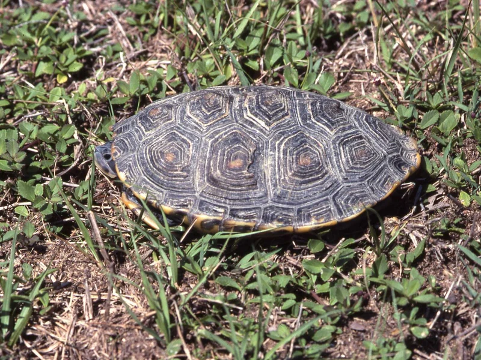

フロリダキーズのマングローブ林に暮らすテラピン。亜種名はマングローブの属名 Rhizophora に由来する。汽水管理が必要な上級種。

1年後の甲長は7〜11cm程度。比重計と人工海水で塩分を管理する日課が生活に組み込まれる。水面でのバスキング習性があり、乾ける陸場を用意すると長く甲羅を干す姿が見られる。
10年後、オスは甲長13cm前後のまま、メスは19〜23cmに達する個体もいる。汽水管理が前提のため、90cm級の水槽と比重計・専用塩の定期的な使用が長期飼育の基盤になる。20〜40年の寿命を持つ。
ダイヤモンドバックテラピンは生まれながら汽水環境に適応した種で、淡水のみで長期間飼育すると徐々に浸透圧のバランスが崩れやすい。購入前から汽水管理の設備を整え、最初から汽水で飼育することが安定飼育への近道になりやすい。
米フロリダ州のフロリダキーズを中心とした、マングローブ林の根元や潮汐水路に暮らす。iNaturalist の Research Grade 観察はおおむね北緯24.8〜25.7度・西経81.2〜80.2度に集中しており、キーズと南フロリダ本土の沿岸にあたる。ダイヤモンドバックテラピン7亜種のなかで、生息環境がマングローブ林と最も強く結びついた亜種とされる。
亜種名 rhizophorarum は、マングローブを構成するヒルギ科の属名 Rhizophora に由来します。首や四肢の皮膚に、他亜種のような細かい斑点ではなく縦の縞が出る個体が多いとされますが、テラピンの亜種形質は連続的に変化するため、写真だけで亜種を確定することはできません。産地情報が最も確実な手がかりです。
← 横にスクロールできます
| 種名 | 甲長 | 難易度 | 必要環境 | 特徴 |
|---|---|---|---|---|
| マングローブダイヤモンドバックテラピン このページ | 13〜23cm | 上級 | 60〜90cm水槽 | 本亜種 |
| ノーザンダイヤモンドバックテラピン | 15〜23cm | 上級 | 60〜90cm水槽 | 基亜種 |
| カロリナダイヤモンドバックテラピン | 13〜23cm | 上級 | 60〜90cm水槽 | 大西洋岸中部の亜種 |
| オルナータダイヤモンドバックテラピン | 13〜20cm | 上級 | 60〜90cm水槽 | 流通が多い亜種 |
飼い方はダイヤモンドバックテラピンの他の亜種と同じで、亜種ごとに変える点はありません。雌雄差が大きく、オスは約13cm・メスは平均19cm、最大23cmを超える記録があります。メスを迎える前提なら90cm以上の水槽を計画してください。2013年のCITES CoP16で種として附属書IIに掲載され、輸入個体には書類が伴います。汽水域専門の種なので、飼育でも人工海水による塩分管理が基本になります。
ダイヤモンドバックテラピンの形態にもとづく亜種区分は、分子系統の研究結果と一致しないことが知られています。亜種の境界そのものが再検討の途中にあり、写真からの亜種同定は原理的に困難です。産地の分からない個体を亜種名で断定することは、このサイトでは行いません。
本ページの和名「マングローブダイヤモンドバックテラピン」は、既存のテラピン亜種ページと同じく英名を音写した当サイトの表記です。国内で定着した和名があるわけではありません。
飼育温度・湿度などの数値は飼育資料と国内飼育の一般的な目安にもとづきます。確定的な一次資料が乏しい項目は断定していません。